Sirius Evolution Specification: Improve decoration management on diagram elements
Preamble
Summary: Improve decoration management on diagram elements including tooltip.
| Version |
Status |
Date |
Authors |
Changes |
| v0.1 |
DRAFT |
2016-10-20 |
lfasani |
Initial version. |
| v0.2 |
PROPOSED |
2016-12-02 |
lfasani |
updated version. |
| v1.0 |
ACCEPTED |
2016-12-22 |
lfasani |
updated version. |
| v1.1 |
PROPOSED |
2017-02-06 |
lfasani |
Remove TransientLayer(keeping transient layer concept) and precise the decoration refresh behavior |
Relevant tickets:
Introduction
The goal of this evolution is to be able to specify at the odesign level the decoration displayed on diagram nodes and the tooltip available on it.
State of the existing
Existing decorations
Currently, there are two types of decorations.
fixed decorations:
They are decorations that are managed by Sirius. They are not customizable
-
delete and edit mode decoration: displayed in the bottom left corner of the node
-
navigate to diagram decoration: displayed in the bottom right corner of the node
-
validation decoration: displayed in the top right corner of the node
custom decorations:
They are defined in the odesign. Their position is related to the DDiagramElement bounding box(DNode, DEdge, DNodeContainer ...). It can be the middle of the bounding box sides(NORTH, SOUTH, WEST, EAST), the 4 corners of the bounding box(N-W, N-E, S-W, S-E) or the center of the bounding box.

There are two types of decoration:
- mapping base decoration which applies on specified mapping
- semantic based decoration which applies on every mapping which target is of type of the specified Domain Class
Known issues/limitations
Currently, there are some issues or limitations about decorations:
- If there are multiple decorations on the same logical place, (bottom right corner for example) they are piled. Only one decoration is totally visible.
- there is no common logic for the gap between the decorations (custom or not) and the border of the bounding bound node
- there is no way to apply custom decoration on all mappings(in case of mapping based decoration) or on many semantic types(in case of semantic based decoration). All mappings have to be selected when defining the custom decoration.
Currently, the only decoration that displays a tooltip is the validation decoration. The message as it is defined in the VSM is displayed during 5 seconds when the mouse hovers it.
Export/Print image
Currently, the decorations are taken into account in both export as image and printing except validation decorations.
Detailed Functional Specification
Decoration positioning
The first enhancement is the decoration positioning for all DDiagramElement excepted for the
connection.
The position is still required but now we manage multiple decorations display. The decorations
will be distributed from their defined position along the border of the bounding box according to the definition in the odesign.
- For corner decoration, it is possible to choose between vertical or horizontal direction.
- For NORTH, SOUTH and CENTER positions, the direction is only horizontal from the left to right. If there is many decorations for a given position, the group is centered horizontally relatively to the middle of the bounding box.
- For WEST and EAST positions, the direction is only vertical from top to bottom. If there are many decorations for these given positions, the group is centered vertically relatively to the middle of the bounding box.
Let’s consider multiple decorations at the same position. Consider that this list of decoration is ordered (see
decoration order ).
- For corner decoration, the first decoration is positioned exactly at the defined position. The followings are distributed vertically or horizontally accordingly to the
distribution direction.
- For others, the group of decorations is always centered relatively to symmetry axis of the bounding box.
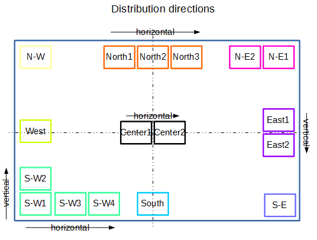
In a group of decoration, two decorations are separated
with 1 pixel spacing.
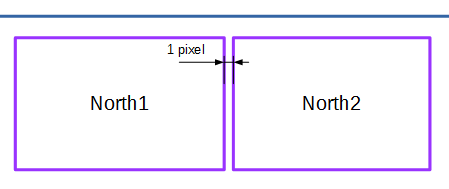
Connection positioning
If the element, the decoration will apply on, is a connection, the decorations are all displayed in a single group.
For decoration defined in the VSM, the position is not taken into account.
The group is positioned at the middle along side the connection.
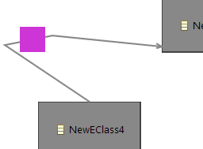
Decoration order in a group of decoration
If there are multiple decorations at a given position, the decoration are displayed according to an order.
The order is
deterministic and should never change between two diagrams, between two clients or after a refresh.
The order is the
alphabetical order of the decoration id except for the following particular Sirius decorations that are always before.
-
delete and edit mode decoration: displayed in the bottom left corner of the node
-
navigate to diagram decoration: displayed in the bottom right corner of the node
-
validation decoration: displayed in the top right corner of the node
- some other decorators that would be declared in third party plug-ins.
What if there is not enough space to display decoration?
A preference will be added in Sirius/Sirius Diagram/Appearance to authorize overlapping of existing decorations.
If true, all decorations are displayed even if there is an overlapping between decorations or if decorations overlap the DDiagramElement bounding box.
By default, the overlapping is not authorized.
The decoration may or may not be displayed according to the available space to display them.
- A decoration will not be displayed if it is larger than the DDiagramElement bounding box.
- Decorations will never overlap themselves.
- In case of virtual overlapping, a special decoration named «list decoration» will be used.
Decorations may have different sizes and proportions. If a decoration is displayed, it is with its full size and it is never resized.
Example of different sized decorations.
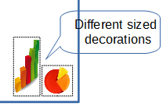
The system begins to compute the bounding box of a group of decorations that is all the decorations at a given position.
Then, starting from center and turning clock-wise from the north, the system will check that the bounding box of the group does not overlap with another one.
If a group overlaps with another, the last decoration of the group is merged with the previous, according to the distribution direction, into a
list decoration.
The list decoration is a 16x16 pixels decoration represented by 3 dots.
If the decoration is alone in the overlapping group and have an height or width exceeding 16 pixels, it is also change in a list decoration.
The merge is done until there is no more overlap of the current group or there is no more decoration to merge.
If there is still overlap between groups after that have been reduced then the merge is done between groups.
Multiple typed decoration inside a group at a given position
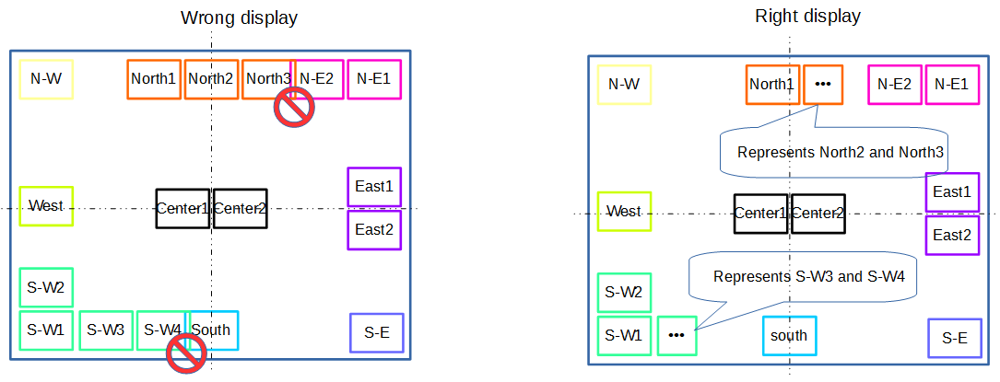
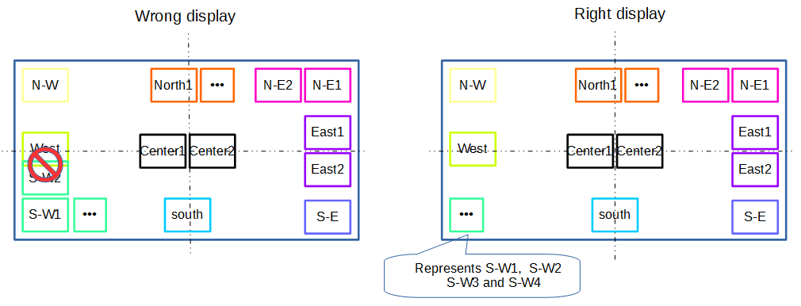
There can not be only only multiple typed decorations at a given position. In such case, only one multiple typed decoration is displayed.
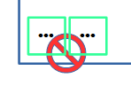
Multiple typed decoration representing decorations at multiple positions
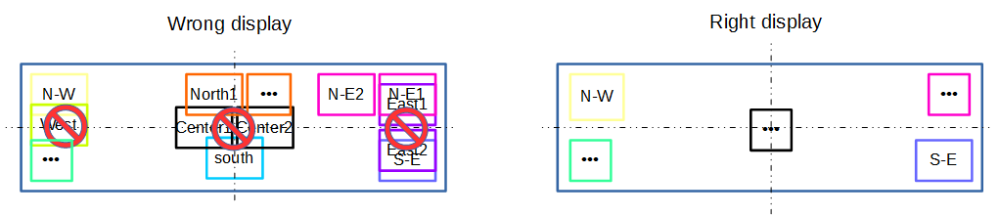
Minimum sized decoration for multiple typed decoration
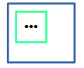
If the DDiagramElement bounding box is smaller than 18x18 pixels the decoration is still displayed and will overlap.
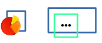
Position from the border of the DDiagramElement bounding box
The decoration will be displayed shifted from the border of the DDiagramElement bounding box. This is useful to avoid overlap between the decoration and the border nodes that «enters» the bounding box. By default the border node goes into the node with
2 pixels so the decoration will be shifted with the same value. This value is called the
margin.
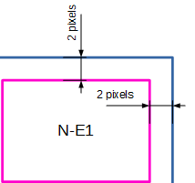
Note that, the border node entering distance can be overridden by developers that would provide their own
DBorderItemLocator. In that case, the decoration will be displayed over the border node. In this specification, we will exclude a dynamic margin computation that would depend on the existing border node.
Important: Whatever position the decoration has,
the layout will never be impacted.
decoration scope appliance
Currently, mapping or semantic based decorations are applied/visible according to the precondition expression and restricted to Mappings or Domain Classes.
To be less restrictive, a new
Generic decoration will be available. It is applied/visible according to only a precondition expression.
The available variables are:
- the container view : the view that contains the view of the checked element
- the container : the semantic element of the container view
- the diagram
Note that, for performance reason, a particular attention will have to be brought on that precondition expression.
In case of diagram extension that contains only style customizations, you can match several viewpoints and/or DiagramDescription using a regular expression.
This will be the case if the diagram extension contains only Style customizations or/and decorations.
Transient layers
A user will be able to activate/deactivate some decorations but
without making the diagram dirty.
The activation/deactivation of decorations will keep being managed by layers.
Currently, if a custom decoration is defined in a layer, the application of the layer will dirty the diagram.
To avoid the dirty status, the concept of a
transient layer is created. A transient layer, is an
AdditionalLayer that contains only decorations or tools, that is, none of things that would change the Diagram content when applied.
At save, the transient layer application is not persisted in the diagram and decorations are not persisted either.
A transient layer has a slightly different definition for
activeByDefault feature: if activeByDefault is true, the transient layer is activated at each diagram
opening whereas the non transient layer is activated at diagram
creation. As a reminder, if
optional feature is true, the layer can be deactivated and if false, the layer is always activated. In the latter case, activeByDefault of a transient layer is forced to be set to true.
A transient layer is a layer that can be used like a non transient layer.
From layers drop down menu in diagram editor tabbar, the transient layers are displayed at end the end of the menu. A separator isolates non transient and transient layers.
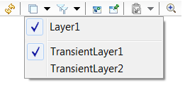
Note that, to apply a transient layer, the owning viewpoint must be applied. So, if it is not the case, the user will have to do it and then will make the session dirty.
Decoration refresh
In auto refresh, the decoration is updated at any change in the session. The refresh is done for all opened diagrams as it is the case today.
In manual refresh, the decoration refresh does not work very well. It is refreshed when modifying the semantic element but only in the case the decoration should be removed.
This specification includes the fix of this bug.
As expected behavior, in manual refresh, after a change on the
DSemanticDecorator.target element and/or
DiagramElementMapping.semanticsElements elements (named associated elements expression in the VSM UI):
- the decorations of a DDiagramElement should be correctly updated without modifying the
DDiagramElement
- the
DDiagramElement may be updated (as it it the case today) and, if updated, will set the diagram as modified.
When applying a transient layer, in manual refresh, the
DDiagramElement won’t be refreshed (contrary to the current behavior). Only the decorations on these
DDiagramElement will be refreshed without modifying the
DDiagramElement.
Print/Export visibility
The preference
authorize overlapping is also used for export and print.
When exporting diagram as image, the user can now choose if the decorations will also be exported or not.

As transient decorations are not persisted in the representation, to have the transient decoration exported, the user will have to open the diagram in an editor before and apply manually the transient layers owning the decorators.
For developers that would export using from code, Sirius will provide the necessary API to apply transient layers.
When printing the diagram, the decoration are included according to Preference in Sirius/Sirius Diagram/Printing.
A new tab
options is added. It will contain a
Print decorations check box.
Note that, to have this preference be taken into account, you will need to close and reopen the diagram before printing.
Note that decoration tooltip will not be displayed in print or export result.
Selection
Decorations are not selectable. Selection is done as if decorations were not there. That behavior required the fix of
Bugzilla 506420 .
A tooltip will be available on decoration. All decorations are concerned : mapping-based, semantic-based and generic decorations.
The maximum
display time will be set fixed to a
10 seconds fixed value.
The tooltip will be defined by the specifier, using an expression defined on the
DecorationDescription. This expression may contain:
- a fixed string
- an expression returning a string
- an expression returning an
IFigure
The available variables are:
- the container view : the view that contains the view of the checked element
- the container : the semantic element of the container view
- the diagram
The tooltip is dynamic, it is re-created each time the decoration is refreshed.
Example of tooltip:
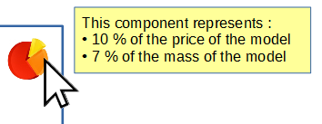
The multiple type decoration tooltip will display an overview of the decorations that it represents and also the tooltip of each decoration.
The layout used is a row layout. Each row represents the decoration followed by its tooltip.
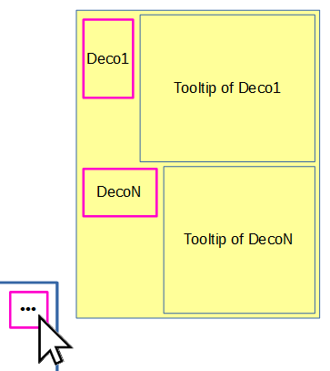
An example:
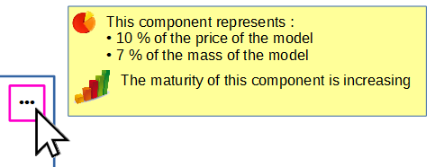
Note that the exact tooltip positioning is not precisely defined in this specification.
Detailed Technical Specification
Transient decoration
DDiagram.activatedTransientLayers is added as a transient feature. When applying a transient additional layer, it is added in
DDiagram.activatedTransientLayers so that the resource will not be set as modified (according to ResourceModifiedFieldUpdater) and the layer appliance will not be serialized.
For
DecorationDescription specific case,
DDiagramElement.transientDecoration is added as transient feature so that this information will not be serialized.
An API will be provided to call the decorations refresh on a diagram.
Custom decoration : generic decoration
A new
GenericDecorationDescription inheriting from
DecorationDescription is created.
In the following changes, some are done on
DecorationDescription from which
MappingBasedDecoration and
SemanticBasedDecoration inherit. Consequently, the enhancement will concern all the
DecorationDescription.
-
DecorationDescription.decoratorPath is removed.
-
DecorationDescription.imageExpression is created as InterpretedExpression. It may be:
- a path to an image
- an expression that gives a path to an image
- an expression that provides an instance of
org.eclipse.swt.graphics.Image
- an expression that provides an instance of
IFigure
-
DecorationDescription.distributionDirection of type enum
DecorationDistributionDirection is added to indicate how the decoration will be distributed from their position. The available literals are
VERTICAL and
HORIZONTAL.
-
DecorationDescription.toolTip is added. It may be:
- a fixed tooltip string
- an expression that provides a tooltip String
- an expression that provides an instance of
IFigure.
Note that, the service called by the expression, that would provide an image or figure must be based on a underlying mechanism that has to manage the cache and the lifecycle of every data needed to provide the image or figure.
An instance of
org.eclipse.draw2d.ToolTipHelper is used internally in draw2 to display tooltip and the
org.eclipse.draw2d.ToolTipHelper.setHideDelay allows to change the delay after which the tooltip is hidden
Runtime mechanisms
At each refresh of the display, the image is required as decoration by the GMF runtime. The image will never be disposed by the system and an image cache should be used by the client for obvious reasons of performance and memory consumption.
GMF registers extensions for
org.eclipse.gmf.runtime.diagram.ui.decoratorProviders. The aim of that providers is to install an
IDecorator on
IDecoratorTarget. At runtime, for a given
IDecoratorTarget GMF asks each installed
IDecorator to give an
IDecoration.
Instead of declaring as many decorator providers as number of possible decorators, Sirius will now declare a single decorator provider that will install a single
IDecorator on every candidate
IDecoratorTarget.
A new class
SiriusGenericDecorator is created to implements
IDecorator.
That class, in order to provides
IDecoration, will have to search for all Sirius decoration contribution using a new class
SiriusDecorationManager.
SiriusDecoratorManager owns a collection of
SiriusDecorationDescriptorProvider and will ask each
SiriusDecorationDescriptorProvider to provide information so that it can create a
IDecoration.
Global decoration architecture
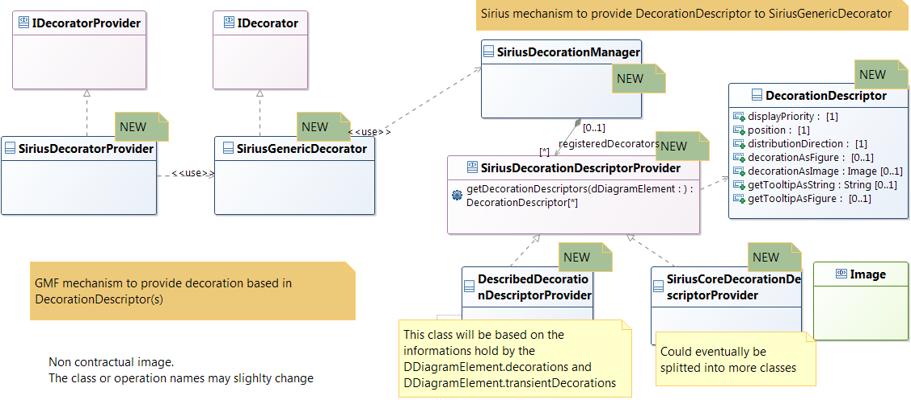
Specific case of
DecorationDescription
Currently, the computation to know if a
DecorationDescription is applied on such
EdgeTarget is done while computating the Sirius representation model precisely in
DDiagramElementSynchroniser.
Decoration instance are set on
DDiagramElement. Currently,
Decoration is basically a reference to a
DecorationDescription. The image retrieval is done when refreshing the decoration.
With the enhancement, the computation of the image can be longer as it may not only get an existing image but also recompute it. For that reason, the decoration image must be recomputed as less as possible. It should be computed when the Sirius representation model is modifide instead of being recomputing at each decoration refresh.
Decoration.image is added as transient feature to store the image. At Sirius refresh,
Decoration.image is null.
Then, on decorator display refresh, the system will compute the decorator image expression and the tooltip expression only if
Decoration.image is null.
Backward Compatibility and Migration Paths
API Changes
The API will evolve accordingly to the meta-model changes.
Changes are done in diagram.ecore in the packages
diagram and viewpoint.ecore in the packages
viewpoint and
viewpoint/description.
Refer to
technical specification to see the changes.
As other changes, the transient, derived feature
DDiagram.getAllActivatedLayers is added to get
DDiagram.activatedLayers and
DDiagram.activatedTransientLayers and will be used almost everywhere
DDiagram.getAllActivatedLayers was.
A migration participant will be added to migrate instance of
MappingBasedDecoration and
SemanticBasedDecoration in the VSM.
Documentation Changes
Updates:
- The specifier documentation for the decoration definition part
- The user documentation for the transient layer application
- The release note
Tests and Non-regression strategy
- Non-regression tests are added.
Implementation choices and tradeoffs
- The decoration display strategy is not designed to be extended or redefined by clients. But, as the code is localized in
SiriusGenericDecorator class and already based on
DecorationDescriptor generic structure, it will be easy to redefine behavior by client in a future enhancement.
- The decoration margin is fixed to 2 pixels from the border of the bounding box. It is not dynamic nor customizable by client.
- The semantic based decoration enhancement, giving the ability to provide many Domain class, is not considered.
- Decoration is always displayed on top of the figure it is applied on. That implies that the horizontal or vertical scroll bar and the +/- collapse button will be hidden by the decoration. Nevertheless, the user will be able to interact/select with the scroll bar or the collapse button as if decoration was not here.
- Decoration display is based on bounding box but not the visible DDiagramElement. It means that decoration may go over the DDiagramElement figure. For example a north-east decoration will be displayed out of the diamond figure or will go over a square node if the corner are rounded.
- Nothing special will be done about decoration on hidden
DDiagramElement. This performance issue shall be handled separately.
Transient layer application by user
This enhancement has been discussed but is out of scope for this specification.
As it is defined in this specification, the concept of transient layer is inferred by the layer content, defined by the specifier in the VSM.
It would be up to the user to choose if the layer is applied transient or not.
There would be a dedicated UI to choose between «not applied», «applied» or «applied transiently».
The concept of transient layer would not be inferred any more but should be the result of user choice.